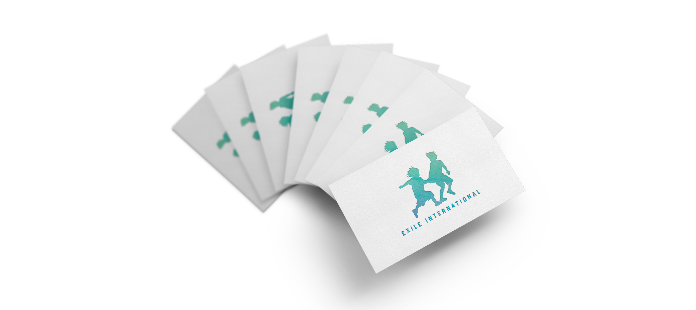

Exile International Symbol
Background & Solution
Exile International advocates for child soldiers and war-affected children in Uganda and DR Congo. The organization empowers children of war through rehabilitative care, worldwide advocacy, and child-sponsorships.
The signature focuses on Exile International's effort to restore war affected children in Africa.